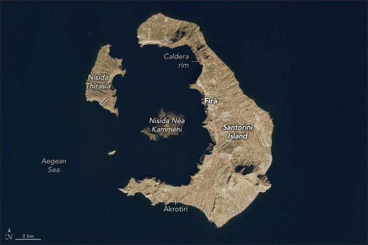

Santorini’s Hidden Worlds
Long ago, the volcanic island Santorini (also called Thíra) had a typical conical shape with steep sides. But a series of eruptions over hundreds of thousands of years emptied the Greek island’s magma chamber, which eventually collapsed and created a crater-shaped depression called a caldera. During a particularly cataclysmic eruption about 3,600 years ago, the volcano hurled vast quantities of ash tens of kilometers into the air, unleashed destructive debris flows and tsunamis, and left the caldera hundreds of meters deep and partially flooded by the Aegean Sea.
The caldera is still prominent in modern times. The OLI-2 (Operational Land Imager-2) on Landsat 9 captured this image of Santorini and neighboring islands on December 18, 2024. Overlooking the caldera rim are lines of white-roofed buildings, including the many hotels and guesthouses that cater to millions of travelers who visit the island each year. Firá, Santorini’s largest town, is the island’s modern capital.
The nearby islands of Nisída Thirasía and the smaller Aspronísi are remnants of volcanic deposits and overlapping calderas that formed during a series of older eruptions, including events that occurred 180,000 years ago, 70,000 years ago, and 21,000 years ago. Nisída Néa Kamméni and Nisída Palaiá Kamméni, the small islands in the center of the caldera, are younger features formed by lava domes and flows that occurred during a less explosive eruption beginning about 2,000 years ago.
Archaeological evidence indicates that the eruption 3,600 years ago, sometimes called the Minoan eruption, devastated what had been the thriving Bronze Age settlement, obliterating and flooding whole towns and potentially leading to significant loss of life. However, the eruption also deposited a layer of ash and tephra several meters thick, which buried and preserved in exquisite detail the ancient Minoan town of Akrotiri. Ruins and artifacts include multi-story buildings, roads, irrigation systems, furniture, pottery, and frescoes. Archaeologists have been excavating the site since 1967.
While archaeologists dig for clues to past worlds on land, astrobiologists have looked to the complex underwater terrain and hydrothermal vents found around Santorini and neighboring underwater volcanoes to prepare for future explorations of distant worlds. Woods Hole Oceanographic Institution scientist Richard Camilli, for instance, led an expedition to Santorini to test autonomous robotic submersibles and AI-based systems that helped plan and control the movements of the underwater vehicles and interpret their observations. Learn more about that expedition in the Our Alien Earth episode above.